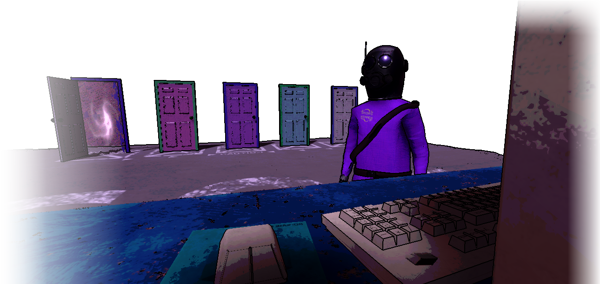
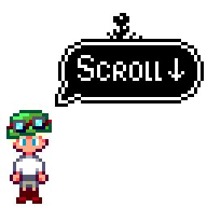
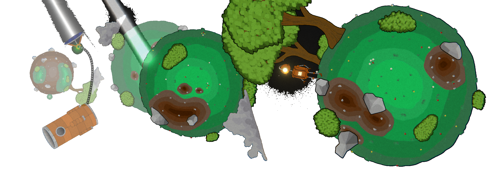

À propos
Je m'appelle Arthur, je suis en première année de Master
et je donne vie à mon imagination à travers le jeu vidéo.
Tout ce qui touche à cet univers m'inspire : de l'art visuel à l'audio,
en passant bien sûr par la programmation gameplay, technique et graphique.
Une sélection de mes projets personnels et académiques vous attend ici.
Bonne découverte
  Projets personnels
Wispelldom
Jeu développé sur le framework MonoGame en c#. Le projet comporte de nombreux systèmes comme le rendu de tilemap, la lecture d'une carte Tiled, l'intégration audio de fmod, la gestion de scène, de la physique et bien plus.
Le joueur incarne un jeune mage explorant les terres magiques de Wispelldom à la recherche de nouveaux sortilèges.
Doors Keepers
Jeu développé sur Unity utilisant Mirror, une API de réseau pour Unity, et FizzySteam, une solution d'intégration Steam, pour implémenter un système multijoueur.
Les joueurs incarnent des employés chargés de gérer des portes menant à des donjons générés aléatoirement. À l'intérieur, ils doivent compléter un objectif pour gagner des crédits permettant d'acheter de l'équipement sur un ordinateur.
Saviour-99
Jeu développé sur Unity.
Le joueur incarne un robot explorant de petites planètes, chacune ayant sa propre gravité. Le robot peut tirer des boules de lumière pour se défendre et résoudre des puzzles, notamment en déplaçant des machines pour diriger un rayon lumineux. L'objectif est d'alimenter un canon permettant d'accéder au niveau suivant.
Elven Heritage
Jeu développé sur Unity.
Le joueur incarne un elfe en quête de trésors dans des donjons générés aléatoirement.

Asteroids (Clone)
Jeu développé sur Godot en C#.
C'est un clone du jeu Asteroids dans lequel le joueur pilote un vaisseau et essaie de survivre en se défendant des dangereux astéroïdes.
Chaque astéroïd détruit rapport un point, une vie en plus est ajoutée tous les 100 points.

Flappy Bird (Clone)
Jeu développé sur Unity.
C'est un clone du jeu Flappy Bird dans lequel le joueur contrôle un oiseau en évitant les tuyaux.
Projets académiques
Cryptic Shop
Jeu de carte développé sur Unity en 3 année de licence.
Une partie est composée de 3 combats entre 4 joueurs, dans un combat les deux joueurs reçoivent les cartes de leur deck sélectionné qu'ils peuvent placer sur le terrain avec du mana.
Une carte dispose de plusieurs type de compétence : passive (s'active chaque tour), payante (coût en mana) et directe (s'active lors du placement).
Les joueurs peuvent aussi acheter des cartes via le magasin avec de l'or.
Un combat se termine lorsqu'un des deux joueurs n'a plus de vie.

Pac-Man (Clone)
Jeu développé en Bash en 3 année de licence.
C'est un clone du jeu Pac-Man, réalisé en groupe, où le joueur doit manger tous les points sans se faire attraper par les fantômes.
Puissance 4 en LAN
Jeu du puissance 4 héberger sur un réseau local (LAN) développer en PHP et JS en 3 année de licence.
Une partie est composée de 2 joueurs qui hébergent leur propre puissance 4 utilisant la même API.
Afin de rejoindre une partie, l'utilisateur saisit le chemin réseau de l'hôte pour d'accéder aux parties hébergées sur celui-ci. Il peut aussi héberger lui même des parties.
Le joueur à le choix de jouer manuellement ou d'utiliser sa propre IA lors d'une partie.

Casse-briques (Clone)
Jeu développé en C avec la librairie SDL en 3 année de licence.
C'est un clone du jeu Casse-briques où le joueur détruit des briques à l'aide d'une balle et d'une raquette.
Tron (Clone)
Jeu développé en C avec la librairie SDL et Ncurses (version textuelle) en 3 année de licence.
C'est un clone du jeu Tron réalisé en groupe, où deux joueurs s’affrontent en laissant des traînées lumineuses derrière eux.
Jeu du Taquin (Clone)
Jeu développé en C avec la librairie SDL et Ncurses (version textuelle) en 3 année de licence.
C'est un clone du jeu Taquin où le joueur doit réorganiser les cases pour former l’image complète.

Jeu du Moulin (Clone)
Jeu développé en Python avec la librairie Pygame en 2 année de licence.
C'est un clone du Jeu du Moulin où le joueur affronte une IA.
Tetris (Clone)
Jeu développé en Python avec la librairie Tkinter en première année de licence.
C'est un clone du jeu Tetris où le joueur empile des pièces pour compléter des lignes.
Snake (Clone)
Jeu développé en Python avec la librairie Pygame en première année de licence.
C'est un clone du jeu Snake où le joueur contrôle un serpent qui grandit en mangeant de la nourriture.
Sokoban (Clone)
Jeu développé en Java avec la librairie Swing en 2 année de licence.
C'est un clone du jeu Sokoban où le joueur doit pousser des caisses pour atteindre les objectifs.
Mémory (Clone)
Jeu développé en Java avec la librairie Swing en 2 année de licence.
C'est un clone du jeu de mémoire où le joueur doit retrouver des paires de cartes identiques.
Calculatrice graphique
Projet développé en HTML, CSS et JavaScript en première année de licence.
Une calculatrice graphique interactive intégrant une implémentation d'analyse lexicale pour évaluer les expressions et afficher des courbes. Ce projet a été réalisé en groupe.
Base de données JO 2024
Projet réalisé en groupe utilisant PostgreSQL, Python et une interface web en 2 année de licence..
Une base de données alimentée par des scripts de web scraping en Python. Un serveur Falcon en Python gère les interactions entre l'utilisateur et la base, et un serveur Apache héberge le site web.
Expériences professionnelles
Stage Développement Web - Enedis
Stage de 5 mois chez Enedis dans le développement web, axé sur la réalisation de fonctionnalités en PHP orienté objet avec le pattern MVC.
Les technologies utilisées sont PHP, JavaScript et SQL.
Ce stage a été réalisé de manière autonome, avec une supervision régulière pour valider les orientations techniques et fonctionnelles.
Une nouvelle expérience
Je recherche un stage dans le développement de jeux vidéo pour ma première année de Master.
Celui-ci débutera le 30 mars 2026 pour une durée minimale de 10 semaines.
Si mon profil retient votre attention, n'hésitez pas à me contacter.
Contact et CV
Vous pouvez me contacter par mail à l'adresse questearthur@gmail.com ou par téléphone au +33 7 80 54 95 58.
Vous pouvez également consulter mon profil LinkedIn ou télécharger mon CV en PDF.
Merci pour votre visite et à bientôt